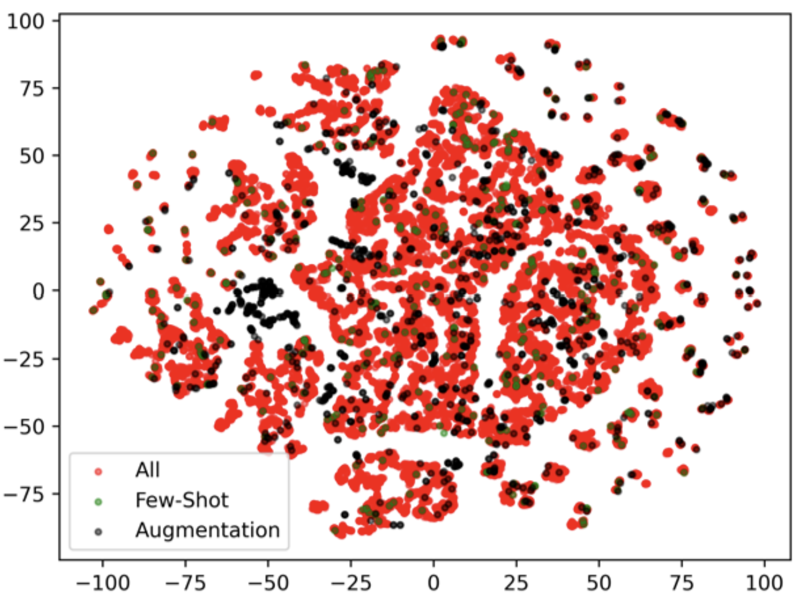
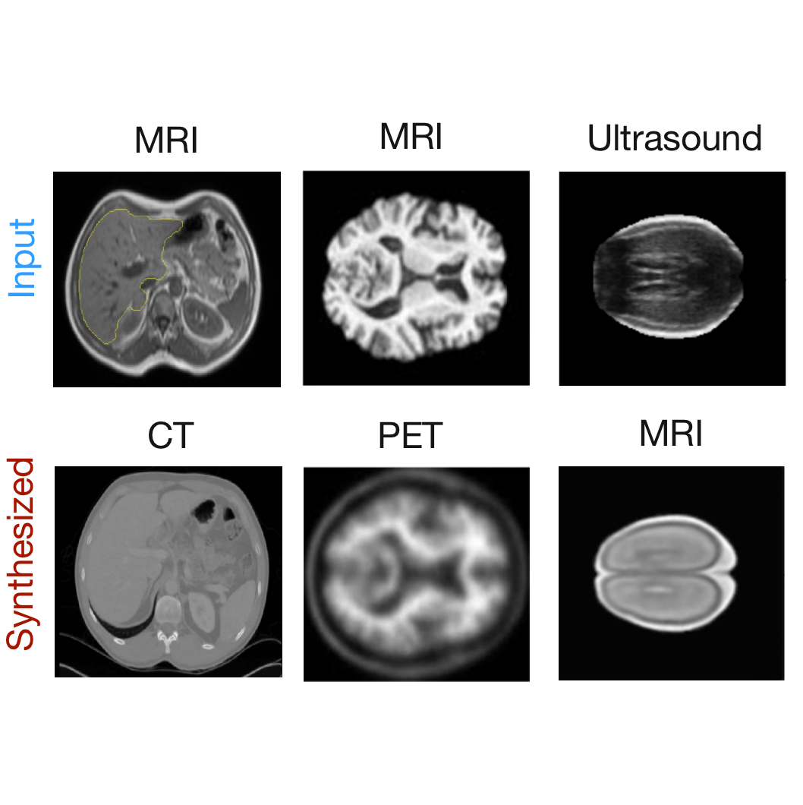
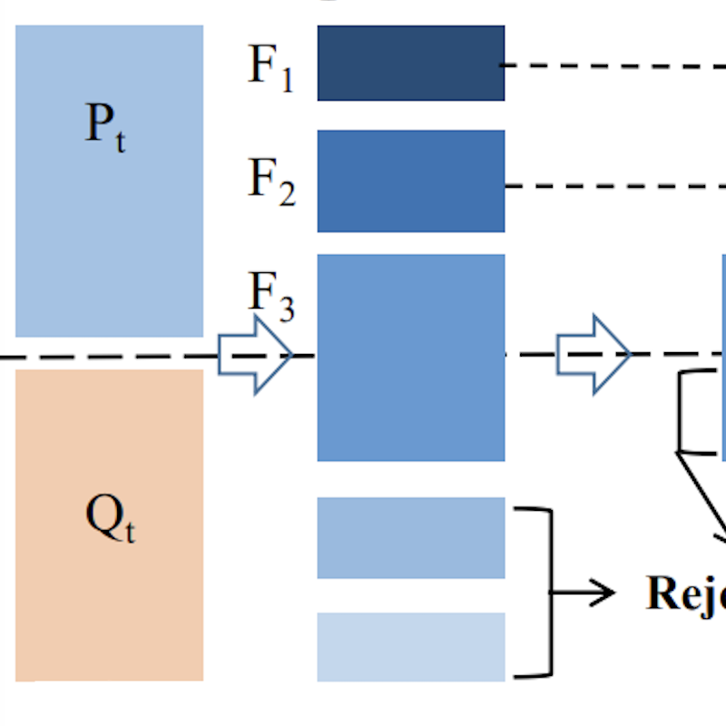

|
Research
I'm interested in image anomaly detection, graph representation learning, computer vision, and machine learning.
Much of my research is about detecting and localize anomalies from images. Representative papers are highlighted.
Note that *contributed equally, †corresponding author
|
|
|
Pushing the Limits of Fewshot Anomaly Detection in Industry Vision: Graphcore
Guoyang Xie*, Jinbao Wang*†, Jiaqi Liu*, Feng Zheng†, Yaochu Jin
ICLR, 2023
project page
/
arXiv
We reveal that rotation-invariant feature property has a significant impact in industrial-based fewshot anomaly detection.
|
|
|
IM-IAD: Industrial Image Anomaly Detection Benchmark in Manufacturing
Guoyang Xie*, Jinbao Wang*, Jiaqi Liu*, Jiayi Lyu, Yong Liu, Chengjie Wang, Feng Zheng, Yaochu Jin
TCYB (Major Revision), 2023
project page
/
arXiv
We propose a large-scale systematic benchmark and uniform setting for IAD to bridge the gap between academy and industrial manufacturing
|
|
|
Deep Industrial Image Anomaly Detection: A Survey
Jiaqi Liu*, Guoyang Xie*, Jinbao Wang*, Shangnian Li, Chengjie Wang, Feng Zheng, Yaochu Jin
Machine Intelligence Research, 2023
project page
/
arXiv
We provide a comprehensive review of deep learning-based IAD from the perspectives of neural network architectures, levels of supervision, loss functions, metrics and datasets.
|
|

|
What Makes a Good Data Augmentation for Few-Shot Unsupervised Image Anomaly Detection
Lingrui Zhang, Shuheng Zhang, Guoyang Xie, Jiaqi Liu, Hua Yan, Jinbao Wang†, Feng Zheng†, Yaochu Jin
CVPR VISION Workshop, 2023
arXiv
We systematically investigate various data augmentation methods for few-shot IAD algorithms.
|
|
|
FedMed-ATL: Misaligned Unpaired Brain Image Synthesis via Transform Loss
Jinbao Wang*, Guoyang Xie*, Yawen Huang*, Yefeng Zheng, Yaochu Jin, Feng Zheng
ACM MM, 2023
arXiv
We proposed a method that reducing the demands for deformable registration while encouraging to leverage the misaligned and unpaired data
|
|

|
Cross-Modality Neuroimage Synthesis: A Survey
Guoyang Xie*, Jinbao Wang*, Yawen Huang*, Jiayi Lyu, Feng Zheng, Yaochu Jin
ACM Computing Survey (Major Revision), 2023
arXiv
We provide a comprehensive review of cross-modality synthesis for neuroimages, from the perspectives of weakly-supervised and unsupervised settings, loss functions, evaluation metrics, ranges of modality, datasets, and the synthesis-based downstream applications.
|
|
|
FedMed-GAN: Misaligned Unpaired Brain Image Synthesis via Transform Loss
Jinbao Wang*, Guoyang Xie*, Yawen Huang*, Jiayi Lyu, Feng Zheng, Yefeng Zheng, Yaochu Jin
Neurocomputing, 2023
arXiv
We proposed a new benchmark for federated domain translation on unsupervised brain image synthesis to bridge the gap between federated learning and medical GAN.
|
|

|
Tiny Adversarial Multi-Objective Oneshot Neural Architecture Search
Guoyang Xie*, Jinbao Wang*, Guo Yu, Jiayi Lyu, Feng Zheng, Yaochu Jin
Complex & Intelligent System, 2023
arXiv
We propose a multi-objective oneshot network architecture search algorithm to obtain the best trade-off networks in terms of the adversarial accuracy, the clean accuracy and the model size.
|
|
Publication List
Conference
-
Zhang, Lingrui, Shuheng Zhang, Guoyang Xie, Jiaqi Liu, Hua Yan, Jinbao Wang†, Feng Zheng†, and Yaochu Jin.
"What makes a good data augmentation for few-shot unsupervised image anomaly detection?"
In Proceedings of the IEEE/CVF Conference on Computer Vision and Pattern Recognition (CVPR Vision Workshop), pp. 4344-4353. 2023.
-
Xie, Guoyang*, Jingbao Wang*†, Jiaqi Liu*, Feng Zheng†, and Yaochu Jin.
"Pushing the limits of fewshot anomaly detection in industry vision: Graphcore."
The Eleventh International Conference on Learning Representations (ICLR). 2023.
-
Li, Wujin, Jiawei Zhan, Jinbao Wang†, Bizhong Xia, Bin-Bin Gao, Jun Liu, Chengjie Wang, and Feng Zheng†.
"Towards Continual Adaptation in Industrial Anomaly Detection."
In Proceedings of the 30th ACM International Conference on Multimedia (ACM MM), pp. 2871-2880. 2022.
-
Xi, Jiang, Jianlin Liu, Jinbao Wang†, Qiang Nie, W. U. Kai, Yong Liu, Chengjie Wang, and Feng Zheng†.
"SoftPatch: Unsupervised Anomaly Detection with Noisy Data."
In Advances in Neural Information Processing Systems (NeurIPS). 2022.
-
Jinbao Wang*, Guoyang Xie*, Yawen Huang*, Yefeng Zheng, Yaochu Jin, and Feng Zheng.
"FedMed-ATL: Misaligned Unpaired Cross-Modality Neuroimage Synthesis via Affine Transform Loss."
In Proceedings of the 30th ACM International Conference on Multimedia (ACM MM), pp. 1522-1531. 2022.
-
Chen, Hongjun, Jinbao Wang, Hong Cai Chen, Xiantong Zhen, Feng Zheng, Rongrong Ji, and Ling Shao.
"Seminar learning for click-level weakly supervised semantic segmentation."
In Proceedings of the IEEE/CVF International Conference on Computer Vision (ICCV), pp. 6920-6929. 2021.
-
Chen, Lian, Ke Lu, Pengcheng Gao, Jian Xue, and Jinbao Wang.
"A Novel Multi-feature Skeleton Representation for 3D Action Recognition."
In International Conference on Pattern Recognition (ICPR), pp. 365-379. Springer, Cham, 2021.
-
Jinbao Wang, Ke Lu, Jian Xue, and Yutong Kou.
"Relative Depth Estimation Prior for Single Image Dehazing."
In 2019 IEEE International Conference on Multimedia & Expo Workshops (ICMEW), pp. 270-275. IEEE, 2019.
-
Jinbao Wang, Ke Lyu, Jian Xue, Pengcheng Gao, and Yanfu Yan.
"A markerless body motion capture system for character animation based on multi-view cameras."
In ICASSP 2019-2019 IEEE International Conference on Acoustics, Speech and Signal Processing (ICASSP), pp. 8558-8562. IEEE, 2019.
-
Jinbao Wang, Ning He, and Ke Lu.
"A new single image dehazing method with MSRCR algorithm."
In Proceedings of the 7th International Conference on Internet Multimedia Computing and Service, pp. 1-4. 2015.
-
He, Ning, Ke Lu, and Jinbao Wang.
"Image denoising using fractional-order non-local TV model."
In Proceedings of International Conference on Internet Multimedia Computing and Service, pp. 279-282. 2014.
Journal
-
Xie, Guoyang*, Jinbao Wang*, Yawen Huang*, Jiayi Lyu, Feng Zheng, Yefeng Zheng, and Yaochu Jin.
"K-CROSS: K-Space-Aware Cross-Modality Score for Synthesized Neuroimage Quality Assessment."
IEEE Journal of Biomedical and Health Informatics (IEEE JBHI) (Under Review). 2023.
-
Xie, Guoyang*, Jinbao Wang*, Yawen Huang*, Jiayi Lyu, Feng Zheng, Yefeng Zheng, and Yaochu Jin.
"Cross-Modality Neuroimage Synthesis: A Survey."
ACM Computing Surveys (Major Revision). 2023.
-
Xie, Guoyang*, Jinbao Wang*, Jiaqi Liu*, Jiayi Lyu, Yong Liu, Chengjie Wang, Feng Zheng, and Yaochu Jin.
"IM-IAD: Industrial image anomaly detection benchmark in manufacturing."
IEEE Transactions on Cybernetics (IEEE TCYB) (Major Revision). 2023.
-
Liu, Jiaqi*, Guoyang Xie*, Jinbao Wang*, Shangnian Li, Chengjie Wang, Feng Zheng, and Yaochu Jin.
"Deep Industrial Image Anomaly Detection: A Survey."
Machine Intelligence Research (MIR). 2023.
-
Xie, Guoyang*, Jinbao Wang*, Guo Yu, Feng Zheng, and Yaochu Jin.
"Tiny adversarial mulit-objective oneshot neural architecture search."
Complex & Intelligent Systems (CIS) 6 (2023): 107-109.
-
Jinbao Wang*, Xie, Guoyang*, Yawen Huang*, Jiayi Lyu, Feng Zheng, Yefeng Zheng, and Yaochu Jin.
"FedMed-GAN: Federated domain translation on unsupervised cross-modality brain image synthesis."
Neurocomputing 546 (2023): 126282.
-
Zheng, Hao*, Jinbao Wang*, Xiantong Zhen, Jingkuan Song, Feng Zheng, Ke Lu, and Guo-Jun Qi.
"Continuous cross-modal hashing."
Pattern Recognition (PR) 142 (2023): 109662.
-
Jinbao Wang, Shuo Xu, Feng Zheng, Ke Lu, Jingkuan Song, and Ling Shao.
"Learning efficient hash codes for fast graph-based data similarity retrieval.
"IEEE Transactions on Image Processing (IEEE TIP) 30 (2021): 6321-6334.
-
Jinbao Wang, Shujie Tan, Xiantong Zhen, Shuo Xu, Feng Zheng, Zhenyu He, and Ling Shao.
"Deep 3D human pose estimation: A review."
Computer Vision and Image Understanding (CVIU) 210 (2021): 103225.
-
Jinbao Wang, Ke Lu, Jian Xue, Ning He, and Ling Shao.
"Single image dehazing based on the physical model and MSRCR algorithm."
IEEE Transactions on Circuits and Systems for Video Technology (IEEE TCSVT) 28, no. 9 (2017): 2190-2199.
-
Jinbao Wang, Ning He, Lu-Lu Zhang, and Ke Lu.
"Single image dehazing with a physical model and dark channel prior."
Neurocomputing 149 (2015): 718-728.
-
He, Ning, Jinbao Wang, Lu-Lu Zhang, and Ke Lu.
"An improved fractional-order differentiation model for image denoising."
Signal Processing 112 (2015): 180-188.
-
He, Ning, Jinbao Wang, Lu-Lu Zhang, Guang-Mei Xu, and Ke Lu.
"Non-local sparse regularization model with application to image denoising."
Multimedia Tools and Applications 75, no. 5 (2016): 2579-2594.
-
He, Ning, Jinbao Wang, Lu-Lu Zhang, and Ke Lu.
"Convex optimization based low-rank matrix decomposition for image restoration."
Neurocomputing 172 (2016): 253-261.
-
He, Ning, Ke Lu, Bing-Kun Bao, Lu-Lu Zhang, and Jinbao Wang.
"Single-image motion deblurring using an adaptive image prior."
Information Sciences 281 (2014): 736-749.
|
|